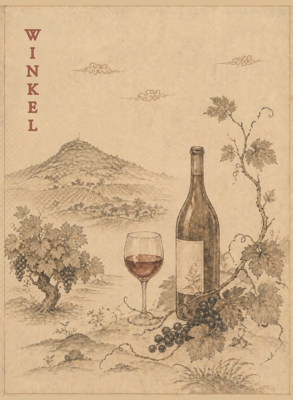
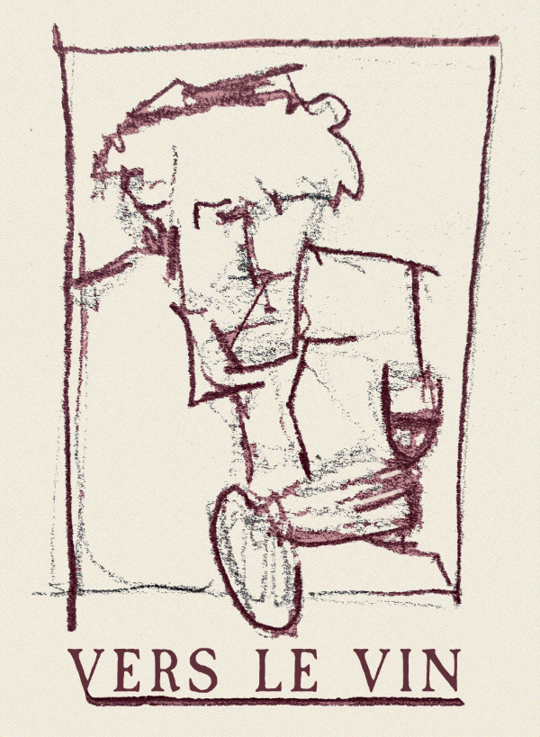
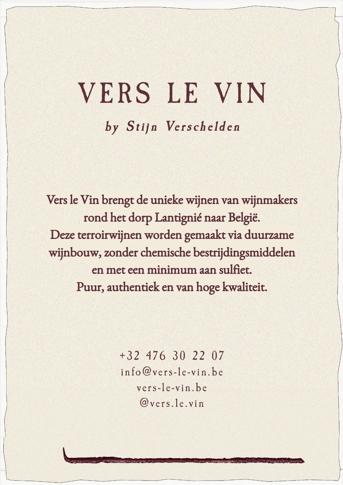
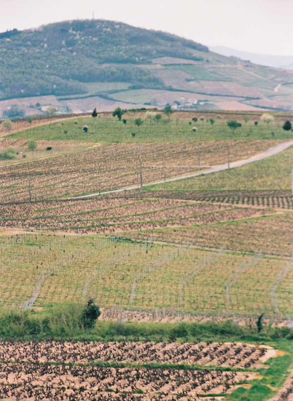

Winkel
Diverse wijnen rechtstreeks van de wijnmaker. Afhalen of levering in België.
Bekijk onze wijnen →


Terroir
A sommelier student observes the work of winemakers around Lantignié for a year. The seasons change, and with them the colors, the sounds, the rhythm ... .
Bekijk de trailer →